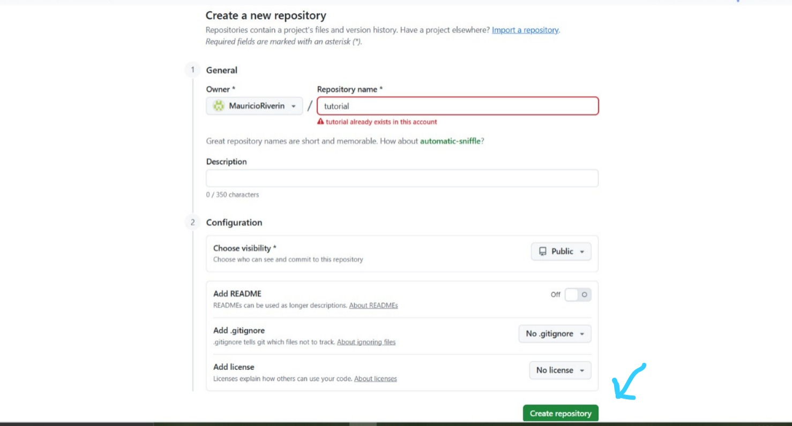
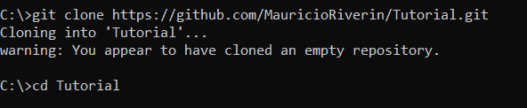
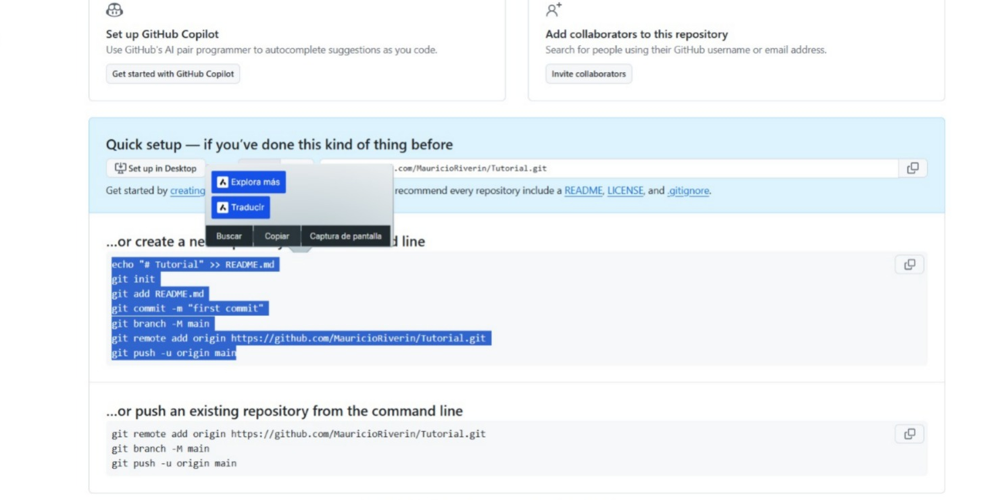
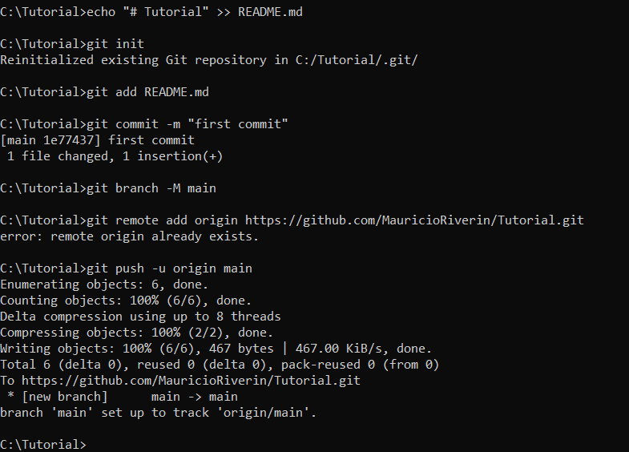
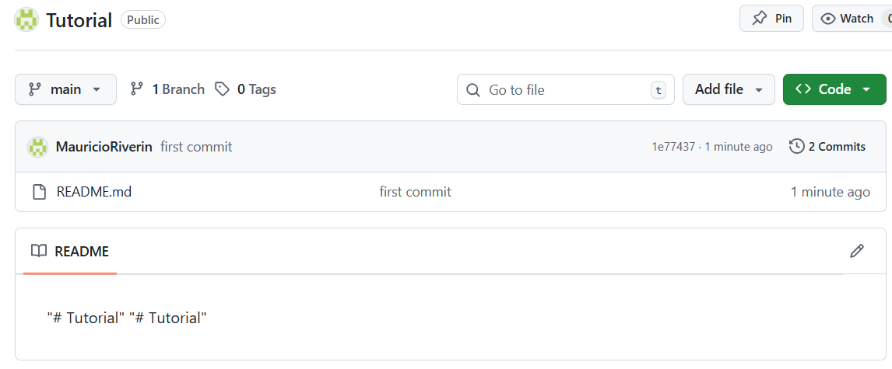
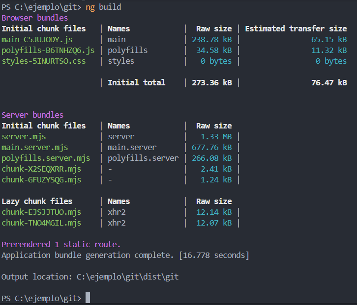
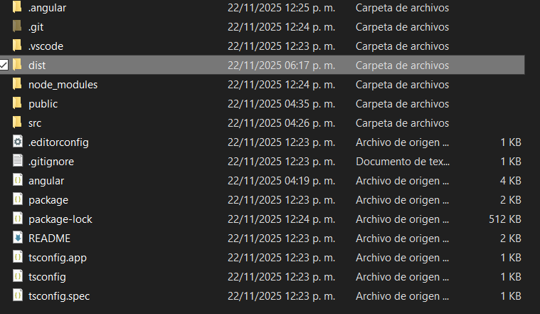
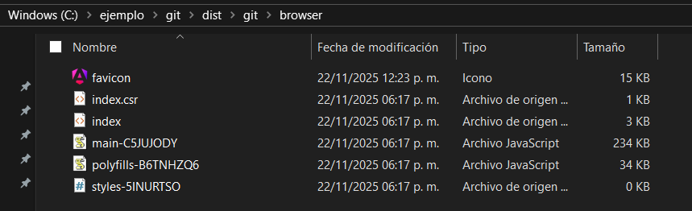
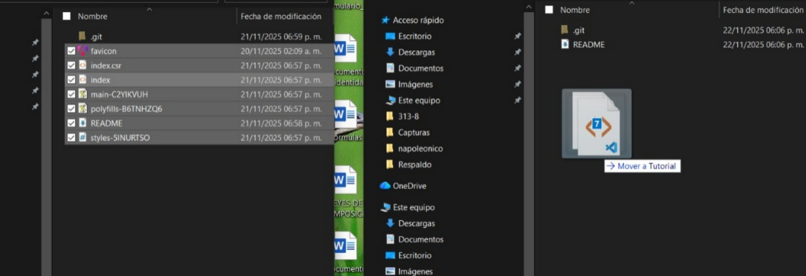

Tutorial de Como subir nuestro diseño a GitPages
Hoy aprenderemos a subir nuestro diseño de una manera alterna a la que estamos acostumbrados
Paso 1
Crearemos un repositorio nuevo desde cero con el nombre que queramos
Paso 2
Procederemos a clonar el repisotorio en nuestros equipos con "git clone (enlace del proyecto)" y procederemos a abrir una terminal dentro del repositorio clonado
Paso 3
Copiaremos el siguiente texto que se encuentra dentro del repositorio original que se encuentra vacio
Y con el texto copiado pegaremos en la terminal prevismente abierta y presionaremos enter (en algunos casos no es necesario)
Paso 4
Verificamos los cambios en nuestro repisotorio y procederemos a ir a nuestro codigo base que hicismos en angular
Ya estando ahi abrimos una terminal integrada desde la carpeta raiz, puede ser desde VSCode, gitBash o Simbolo de Sistema, y procederemos a usar el codigo ng build
Paso 5
Despues de el comando termine de compilar se creara la carpeta Dist y procederemos a abrirla pero desde las carpetas de nuestro equipo
Al entrar nos encontraremos con la carpeta git entramos a ella hasta toparnos con la carpeta Browser
Paso 6
Copiaremos los elementos de la carpeta Browser en la raiz del repositorio vacio que clonamos desde el principio
Cuando termine de copiar procederemos a subir los cambios usando los comandos
git add . git commit -m "Cambios" git push
Paso 7
Luego hacemos el proceso comun de subir paginas a GitPages que usamos habitualmente en mi caso es:
Entrar a Setting ir a la seccion pages sellecioanr la rama main y roots y pulsar save

Y asi tendremos nuestra pagina en GitPages espero que te haya ayudado :)